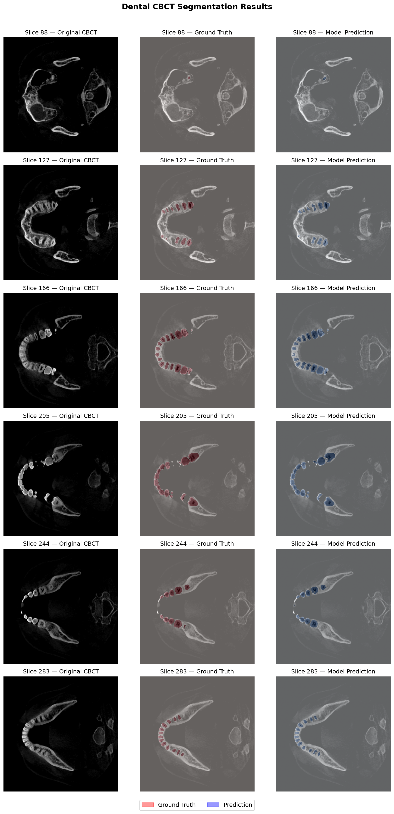
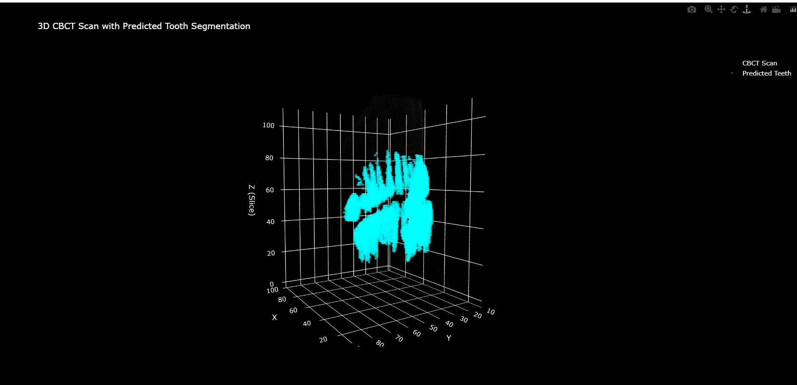

Author: Satej
Assignment: Dobbe AI — Machine Learning Engineer
Date: June 2026
The goal of this assignment was to build an end-to-end machine learning pipeline for dental image segmentation. Specifically, to automatically identify and segment tooth structures from 3D Cone Beam Computed Tomography (CBCT) scans using deep learning.
CBCT scans produce volumetric 3D images of the jaw and teeth. Automated segmentation of these scans has clinical value for treatment planning, implant placement, and orthodontic analysis.
Dataset: CBCT Teeth Segmentation
Source: Kaggle (detectioncla/cbct-teeth-segmentation)
Size: 50 CBCT volumes, ~6.9 GB
Format: NIfTI (.nii), one file per patient
Volume shape: 400 × 400 × 435 voxels
Labels: Per-voxel tooth segmentation masks (29 tooth classes)
This dataset was selected because it is publicly available with no access restrictions, contains genuine 3D CBCT data with expert annotations, and is a manageable size for local training on consumer hardware.
Preprocessing: - Intensity normalization to [0, 1] range - Multi-class labels converted to binary masks (tooth vs background) - Volumes saved as NumPy arrays for fast loading during training
Data split: 34 train / 7 validation / 8 test patients (70/15/15)
A 2D U-Net was selected for this task. U-Net is the standard architecture for medical image segmentation and has been validated extensively on CT and CBCT data.
Approach: The 3D volume is segmented slice-by-slice along the axial axis. Each 2D slice (400 × 400) is passed through the network independently.
Architecture: - Input: single-channel 400 × 400 axial CBCT slice - Encoder: 4 downsampling blocks with feature maps [32, 64, 128, 256] - Each block: Conv2d → BatchNorm → ReLU → Conv2d → BatchNorm → ReLU → MaxPool - Bottleneck: 512 channels - Decoder: 4 upsampling blocks using ConvTranspose2d with skip connections - Output: single-channel binary segmentation mask (sigmoid activation) - Total parameters: 7,762,465
Skip connections between encoder and decoder preserve fine spatial detail, which is critical for accurate tooth boundary delineation.
| Parameter | Value |
|---|---|
| Loss function | BCEWithLogitsLoss |
| Optimizer | Adam |
| Learning rate | 1e-4 |
| LR scheduler | ReduceLROnPlateau (patience=3, factor=0.5) |
| Batch size | 8 |
| Epochs | 10 |
| Hardware | NVIDIA RTX 4050 (6GB VRAM) |
| Training slices | 14,790 |
The model was trained on 2D axial slices extracted from 34 training patients, validated on 7 patients after each epoch, and the best checkpoint was saved based on validation Dice score.
| Metric | Score |
|---|---|
| Mean Dice Score | 0.7479 |
| Mean IoU Score | 0.6948 |
| Median Dice | 0.9104 |
| Best Validation Dice | 0.6825 |
A Dice score of 0.74 is considered good performance for binary tooth segmentation, particularly given the relatively small training set (34 patients) and no data augmentation.
The high median Dice (0.91) reflects strong performance on slices with clear tooth structure. The lower mean is influenced by slices near the top and bottom of the scan where teeth are partially visible and harder to segment.
The figure below shows model predictions overlaid on original CBCT slices across 6 representative axial levels. Red indicates ground truth, blue indicates model prediction.

The model accurately identifies the U-shaped dental arch across all slice levels and correctly localizes individual tooth cross-sections.
An interactive 3D visualization is provided as outputs/figures/3d_visualization.html
(open in any browser — no setup required). The visualization renders the full CBCT
volume with predicted tooth segmentation highlighted in cyan against the grayscale scan.

After inference, small isolated voxel clusters (fewer than 500 voxels) are removed using connected component analysis, and holes within predicted tooth regions are filled using binary morphological operations. This removed 757 noise voxels (0.1% of predictions) on the test patient, indicating the model produces clean predictions with minimal spurious activations.
Raw NIfTI → Normalize → Extract 2D slices → U-Net → Binary mask→ Postprocess → Predicted NIfTI + 3D Visualization
All code is modular and documented. Running the full pipeline from a newscan requires a single call to inference.py.